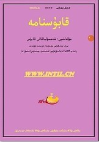

ئالدىنقى يازما
ئالدىنقى يازما كېيىنكى يازما
كېيىنكى يازما
تېببىي ئىلىم ھەققىدە [تېبابەت بىلىملىرى]
ئاپتور:Birzat ۋاقتى:2010-06-10



( قابۇسنامىنىڭ شۇ نامدىكى پارچىسى ئىلىندى)
ھەزرىتى مۇھەممەد ئەلەيھىسسالام : << ئىلىم ئىككى تۈرلۈك بولىدۇ . ئۇنىڭ بىرى ، ھىپزى سىھھەت ( تىب ) ئىلمى ، يەنە بىرى تۈرلۈك دىنلارنى بىلىش ، تەتقىق قىلىش ئىلمى >> دېگەن ئىدى . بۇ يەردە تىب ئىلمى دىن ئىلمىدىن ئىلگىرى بايان قىلىندى . چۈنكى ،ئىنساننىڭ تېنى ساغلام بولمىسا ، دىننىڭ ئىبادەتلىرىنىمۇ قىلىشقا قادىر بولمايدۇ .ئىنسان ساق - سالامەت بولسا دىننىڭ ئىبادەتلىرىنى ، دۇنيانىڭ ئىشلىرىنى قىلالايدۇ . شۇنىڭ ئۈچۈن تىب ئىلمى ئىلگىرى قويۇلدى . ئەگەر تېۋىپ بولساڭ ، تېبابەت ئەسلىنى ياخشى بىلگەيسەن . تىب ئىككى قىسىم بولىدۇ . بىرى ، تېببىي ئىلىم ( تىب ئىلمىنىڭ نەزەرىيىسى ) ؛ يەنە بىرى ، تېببىي ئىلىمنى ئەمىلىيەتتە قوللىنىش . بۇلارنى ياخشى تەتقىق قىلىپ بىلىش كېرەك . چۈشىنىش لازىمكى ، ئادەمنىڭ بەدىنىدە بار نەرسىلەر بەدەننىڭ بەرپا بولۇپ تۇرۇشىدىكى ئامىلدۇر ، مەسىلەن ئەقىلگە ئوخشاش . ئەگەر ئادەمنىڭ ئەقلى يوقالسا ، بەدەن ئۆز ھالىتىدە تۇرالمايدۇ ، يېقىلىدۇ . بەدەننىڭ قۇۋۋىتى قان بىلەن بولىدۇ . ئەگەر قان كەتسە بەدەن ئاجىزلىشىدۇ . بەدەن جان بىلەن ھەرىكەتكە كېلىدۇ ، ھالەتتىن - ھالەتكە يۆتكىلىدۇ ، ھەرىكەتلىنىدۇ . جانسىز بەدەن ھەرىكەت قىلمايدۇ . بۇ ماددىلار تەبىئىيدۇر . ئەلۋەتتە ئادەم بۇ نەرسىلەرسىز تىرىك بولالمايدۇ . ئادەمدە تاشقى تەركىب بولىدۇ . ئۇ بەدەننىڭ تاشقى تەرىپىدىن پايدا ياكى زىيان قىلىدۇ ، ۋاستە بىلەن بولىدۇ . مەسىلەن ، بىر كىشى ئىككىنچى كىشىدن ئىنتىقام ئېلىش مەقسىتىدە بولسا ، يالغۇز بولغاندا ئىنتىقام ئالالمايدۇ . بولۇپمۇ دۈشمىنى ئۆزىدىن كۈچلۈك بولغاندا ئىنتىقام ئېلىشقا پېتىنالمايدۇ . ئەگەر ياردەمچىسى بولسا ، غەلبە قىلىدۇ . شۇنىڭغا ئوخشاش بۇ ماددىلارنىڭ بىر - بىرىگە مۇۋاپىقلىشى بىلەن بەدەن ھاياتىي كۈچ ھالىتىدە بەرپا بولالايدۇ .
تۆت خىلىت ئىنسان بەدىنىدىكى تەركىب ( تۈزۈلۈش ) تىندۇر . بۇ تىب ئالىملىرى ئۇسلۇبىدا << ئىستىقاد ۋە ئاناسۇرى ئەربەئە >> ( ئىپتىدا بولغان ماددا ) دېيىلىدۇ . ئاناسۇرى ئەربەئە سۇ ، ئوت ، شامال ، تۇپراقتىن ئىبارەت بولۇپ ، ئىنساننىڭ ئىپتىدائىي يارىتىلىشىدا بار ماددا دېمەكتۇر . بۇ ماددىلار ئىنسان مىجەزىگە يېقىن ( مۇرەككەپ ) دۇر . ئادەمدىكى مىجەز توققۇزدۇر : بىرى ، مۆتىدىل مىجەز ، قالغان سەككىزى غەيرىي مۆتىدىل ( غەيرىي نورمال ) مىجەزدۇر . بۇ سەككىز خىل مىجەزنىڭ تۆتى يالغۇز ھالەتلىك ، تۆتى مۇرەككەپ ( بىر - بىرىگە مۇناسىۋەتلىك ) تۇر . بۇنىڭ مەنىسى شۇكى ، ئادەم ئەزاسى خىلىتلەر بىلەن مۇرەككەپتۇر ؛ خىلىت مىجەز بىلەن مۇرەككەپتۇر . مىجەز ئاناسۇر ( ئېلېمېنت ) بىلەن مۇرەككەپتۇر. ئاناسۇر بەدەننىڭ چوڭقۇر ماددىسىدۇر . بۇنىڭدىن سۈرەت ( شەكىل ) جىنسقا تەئەللۇق بولغىنى << قەۋا >> ( كۈچ ) ، روھ ، پائالىيەتتىن ئىبارەت . قەۋا ئۈچ تۈرلۈك بولىدۇ : ( 1 ) نەپسانىي ( ھاياتنىڭ زاتى ) ؛ ( 2 ) ھايۋانىي ( ئادەمنىڭ تىرىك بولۇشى ) ؛ ( 3 ) تەبىئىي .
ھەرىكەت قۇۋۋىتى شۇكى ، ئادەم ئەزالىرىنىڭ تۈر سانى قانچە بولسا ئۇنىڭ سانى شۇنچە بولىدۇ . ئىدراكى قۇۋۋەت ئىچكى ئەزادا بولىدۇ ، ئۇ خىيال ، پىكىر ، ئەس - يادىغا كەلتۈرۈش . ھايۋانىي تەبىئەت ئىككى تۈرلۈك بولىدۇ : ( 1 ) قىلغۇچى ۋە قوبۇل قىلغۇچى ، تەبىئىي مىجەز--- تۇغدۇرغۇچى ، تەربىلىگۈچى ؛ ( 2 ) پائالىيەت ۋە نەپسانىي مىجەز مىجەزى تەبىئىينىڭ سانى باراۋىرىدە بولىدۇ . چۈنكى ، روھ قۇۋۋەتنىڭ خىزمەتكارى ۋە پائالىيەتنىڭ پەيدا بولۇش ئورنىدا بولىدۇ . پائالىيەت ، قۇۋۋەتنىڭ تەسىرىدۇر . پائالىيەت ھەممىسى بەرپا بولۇپ تۇرۇشنىڭ سانى باراۋىرىدە بولىدۇ . روھ ئۈچ تۈرلۈك بولىدۇ ؛ نەپسانىي ، ھايۋانىي ، تەبىئىي . بۇنىڭغا تەۋە بولغۇچىلار بەدەننىڭ بىر پۈتۈن گەۋدە بولۇپ تۇرۇشى ، سىباتى ، مەسىلەن سېمىزلىككە ئوخشاش . بۇ ، ئادەم مىجەزىنىڭ سوغۇقلۇقىغا تەۋەدۇر . ئورۇقلۇق ئادەم مىجەزىنىڭ ئىسسىقلىقىغا تەۋەدۇر . ئادەم بەشىرىسى ( يۈز - قىياپىتى ) نىڭ قىزىللىقى قانغا تەۋەدۇر . يۈز - قىياپىتى ، تېرىنىڭ سېرىقلىقى سەپراغا تەۋەدۇر . تومۇرنىڭ ھەركىتى ھايۋانىي ( ھاياتىي ) قۇۋۋەتنىڭ كۈچىگە تەۋەدۇر . تومۇرنىڭ شۈك تۇرۇشى قۇۋۋىتى مۇنپىلە ( خىجىللىق ، ئۇيىتىش . . . ) گە تەۋەدۇر . . . بەدەننى بىر ھالدىن يەنە بىر ھالەتكە يۆتكەيدىغان نەرسە زۆرۈرىي سەۋەب دېيىلىدۇ . ھاۋا ، تاماق ، ھەرىكەت ، شۈك تۇرۇش ، ئۇخلاش ، ئويغاقلىق ، تەبىئەينىڭ تۇتۇلىشى ۋە راۋانلىقى ، نەپسى ناتىقەگە يۈزلىنىدىغان نەرسىلەر ، غەم - قايغۇ ، غەزەپ ، قورقۇش قاتارلىقلار زۆرۈرىي سەۋەبتۇر . مۇنداق دېيىشىمىزنىڭ سەۋەبى ، يۇقۇرقى ھالەتلەر ئادەمگە دۇچ كېلىشتىن ساقلىنىشقا بولمايدۇ . ئۇنىڭدىن ئادەمنىڭ بەدىنىگە تەسىر يېتىدۇ . بۇ نەرسىلەر نورمال بولسا ، ئادەم سىھھەت بولىدۇ . ئەگەر بۇ ھالەتلار بۇزۇلسا ، بەدەندە ئاغرىق پەيدا بولىدۇ . مەسىلەن ، غايەت توقلۇق ياكى ئاچلىق ، كۆپ ئۇخلاش ، غايەت ئۇقۇسىزلىق ، غايەت خۇشاللىق ياكى غايەت قورقۇش يۈز بەرگەندە ئادەم كېسەل بولىدۇ .
ئەي ئوغۇل ، تىب ئىلمى جالىنوس ئەسەرى شەرھىدە << 16 تۈر >> گە بۆلۈنىدۇ . بۇنى ئىقساد بابىدىن ، خىلىت ئىلمىنى << 16 تۈر >> نىڭ ئىككىنچى ماقالىسىدىن ۋە ئوخشاش ئەزالار بايانىدىن ، دىئاگنوز بابىدىن كۆرۈۋالغايسەن . يەنى تىب ئىلمىدە ماھىر بولۇشنى خالىساڭ ، << كەۋنى ۋە پاسات >> كىتابىدىكى مىجەز ئىلمىنى ئۆگەنگىن . ئەجرامى ساماۋى ( ئاسمان جىسىملىرى ) تەركىبىدە ۋە ئالەمدە نېمىلەر بارلىقىنى ئۆگەنگىن . << قەۋا >> ۋە پائالىيەت - ھەرىكەت ئىلمىنى << كىتابى نەپس >> ۋە ھېس ، ھېس قىلىنغۇچى شەيىئلەر ھەققىدىكى كىتابلاردىن ئۆگەنگىن . ئەزالار ئىلمىنى << كىتابۇلھايۋان >> دىن ئۆگەنگىن . سەۋەب ۋە كېسەللىك ھەققىدىكى بىلىمنى << سىتتەئەشەرە >> ( 16 تۇر ) نىڭ بىرىنچى ماقالىسىدىن ئۆگەنگىن . بۇ كىتابلارنى ئوقۇپ تەتقىق قىلساڭ ، تىب ئىلمىدە زور ئالىم بولىسەن .
ئەي ئوغۇل ، تىبنىڭ ئىلمىي قاراشلىرىنى بىر ئاز بايان قىلدىم . ئەمدى تىبنىڭ ئەمەلىيىتىدىن بىر ئاز بايان قىلىشىم لازىم . ئىلىم ۋە ئەمەلىيەت تەن بىلەن جانغا ئوخشاشتۇر . جان تەنسىز بولمايدۇ ، تەن جانسىز بولمايدۇ . ئەگەر بىر كېسەلنى داۋالىماقچى بولساڭ ، ئاۋۋال كېسەلنىڭ ياش ۋە قېرىلىرىنىڭ تائامىنى تەكشۈرۈپ كۆر . ئەگەر كېسەل قېرى ئادەم بولسا ، يېمەك - ئىچمەكلىرى قانداق بولۇشى كېرەك ، ئوتتۇرا ياشلىق ئادەمنىڭ تائامى قانداق بولۇشى كېرەك ، كىچىك بالا بولسا قانداق تائام يېيىش كېرەك ؟ تەكشۈرۈپ كۆرگەندىن كېيىن ، كېسەلنى داۋالاشقا كىرىشكەيسەن ، كېسەلنىڭ تائامىنى ۋە كېسەلنى بىلمەي تۇرۇپ داۋالاشقا كىرىشمىگەيسەن . بىلگىنكى ، كېسەل ئۈچۈن ئەسلىي ئىلاج غىزادۇر . داۋالاش ئىككى تۈرلۈك بولىدۇ : بىرى ، كېسەلگە تائام يېگۈزۈش ، ئىچۈرۈش ؛ يەنە بىرى ، يېمەك - ئىچمەكنى مەنئى قىلىش . بۇ ئىشلارنى بېجىرمەي تۇرۇپ داۋالاشقا ئۆتمەسلىك كېرەك . تېۋىپ بولغۇچى كىشى ئالدى بىلەن كېسەلنىڭ بەدىنىدە قانچىلىك قۇۋۋىتى بار ؟ كېسەل نېمە سەۋەبتىن پەيدا بولغان ؟ كېسەل كىشىنىڭ مىجەزى قايسى خىلدا ؟ كېسەلنى داۋالاشقا كىرىشكەن پەسىل يازمۇ ، باھارمۇ ، كۈزمۇ ، قىشمۇ ؟ بۇ مەسىلىلەرنى تەكشۈرۈپ تەتقىق قىلىشى كېرەك . ئۇنىڭدىن كېيىن كېسەلنىڭ تومۇر ھەركىتىگە قاراش لازىم . تېۋىپ شۇنى بىلىش لازىمكى ، كېسەلنىڭ بوھران ئالامەت ( بەلگە ) لىرى ياخشىمۇ ، يامانمۇ ؟ تىبدە بوھران دەپ ئاتالغان ھالەت شۇكى ، بەدەننىڭ ئەسلىي تەبىئىتى ئىللەت ماددىسى ( كېسەل ئېلېمېنتى ) بىلەن جەڭ قىلىدۇ . تەبىئەت غالىب كەلسە ، بوھران تامام بولىدۇ ، ياخشىلىقتىن ئۈمىد بار . ئەگەر تەبىئەتتىن ئىللەت ماددىسى غالىب كەلسە ناقىستۇر ، يەنى ياخشى ئەمەستۇر . كېسەلنى تەكشۈرگەندە كېسەلنىڭ سەۋەبىنى ، مىجەزىنى ، يېشىنى ، كېسەل كىشىنىڭ قىلغان ئىشىنى ، كېسەلنىڭ خاھىشىنى ، كېسەل بولغان يېرى ۋە قىزىتمىسىنى بىر - بىرلەپ تەكشۈرگەي ۋە تەتقىق قىلغاي .
بىلىش لازىمكى ، ئىسسىقتىن بولغان كېسەلنى قانداق داۋالاش كېرەك ؟ تىب قانۇنىغا مۇۋاپىق داۋالاش لازىم . بۇ ھەقتە تەپسىلىي بايانات بېرىلسە ھەر بابىغا بىر كىتاب كېرەك بولىدۇ . تېۋىپ كېسەلخانىدا كۆپ خىزمەت قىلغان بولۇشى لازىم . ئۇ ، تۈرلۈك كېسەللەرنىڭ شەكلى ۋە كەيپىياتىنى تونۇپ ئالغاي . ھەر قانداق ئاغرىقنىڭ نامىنى ، شەكلىنى بىلىشى ( تونۇۋېلىشى ) لازىم . ئەگەر تېۋىپ كېسەلنى تونۇمىسا ۋە نامى ( دىئاگنوزى ) نى بىلمىسە ، بەكمۇ زور نادانلىق بولىدۇ . تېۋىپ تىببىي كىتابلاردىن ئوقۇپ كۆرگەن ، تەتقىق قىلغان نەرسىلەرنى ئالدى بىلەن ئاغرىق ئادەمنىڭ ئۆزىدە ئۆز ئەينى بويىچە كۆرەلىشى لازىم . داۋالاشتا مۇتەئەسسىپىلىك قىلىپ ، مەن بۇ كېسەلنى جەزمەن داۋالايمەن ، دېمە . كىچىك پېئىللىق بىلەن ئۇلۇغ ئالىملارنىڭ كىتابلىرى ۋە ئىلمىي تەجىبىلىرىگە تايىنىپ ئىشلىگەيسەن . تېۋىپ ئۆزىنى يامان ئىشلاردىن ساقلىغاي ، ئۆزىنى ، تېنىنى پاك تۇتقاي ، خۇشخۇي يۈرگەي . كېسەل كۆرگەندە چىرايىنى ئوچۇق تۇتۇپ ، ياخشى سۆزلۈك بولغاي . كېسەلگە قۇۋۋەت بېرىپ سۆزلىگەي . چۈنكى ، تېۋىپنىڭ كېسەل ئادەمگە مەدەت بېرىشى تەبىئىي ھارارەت ۋە روھىي كۈچ بېغىشلايدۇ .
ئەي ئوغۇل ، ئېسىڭدە تۇرسۇنكى ، كېسەلنى ئۇخلاپتۇ دەپ گۇمان قىلساڭ ، چاقىرغىنىڭدا جاۋاب بەرمىسە ، سېنى تونۇمىسا ، كۆزىنى پات - پات ئېچىپ يۇمسا ، قولىنى ھەر تەرەپكە تاشلاپ ئۆرۈلۈپ ياتسا ؛ ئەگەر بىھۇش بولۇپ ، ھەر ۋاقىت چاقىرسا ، قولىنى تاشلىسا ؛ كۆزىنىڭ ئېقى ئاۋالقى ھالىتىدىن ئاقراق ، قارىسى ئاۋالقىدىن قارىراق بولۇپ لېۋىنى يالىسا ؛ يۆتەلسە ، بەلغەم تۈكۈرۈكىنى بىر نەرسىگە ئېلىپ قۇرۇتۇپ ، يۇغاندا ، بەلغەم - تۈكۈرۈكنىڭ ، رەختتە ئىزى قالسا ، قەي قىلسا ( قۇسسا ) ، قۇسۇق ھەر خىل رەڭدە بولسا ؛ قاتتىق ھەسەت ، كۈنداشلىق ياكى قاتتىق غەم - قايغۇ تەسىرىدىن ئاغرىغان بولسا ؛ . . . بۇلارنىڭ ھەممىسى يامان ئالامەتتۇر . داۋالىمىغىن ، پايدىسى يوقتۇر . كېسەلدە يۇقۇرقىدەك ئالامەتلەر كۆرۈلمىسە داۋالاشتىن ۋە سىھھەت تېپىشتىن ئۈمىد قىل .
ئەگەر كېسەلنىڭ ھالىتىنى تەكشۈرمەكچى بولساڭ ، تومۇرىنى تۇتۇپ كۆر . كېسەلنىڭ تومۇرى قۇۋۋەتلىك بولۇپ ، بارماقلار ئاستىدىن ئۆتكەنلىكى بىلىنسە قان ئۈستۈن ( غالىب ) دۇر . ئەگەر تومۇر ئىنچىكە بولۇپ تېز سوقسا سەپرا ئۈستۈندۇر . ئەگەر تومۇر بارماق ئاستىدا ئىنچىكە ۋە سۇس ، بەزىدە يوغان سوقسا ، ھۆللۈك بەلغەمنىڭ ئۈستۈنلىكى . تومۇر ئېتىلىپ قوپال سوقسا ، قۇرۇقلۇق سەۋدانىڭ ئۈستۈنلىكى . ئەگەر تومۇر چوڭ - كىچىك ، ئاستا - تېز ، مۇرەككەپ سوقسا دىققەت قىلىپ قايسى تەرىپى ئۈستۈن بولسا ، ئۈستۈن تەرەپكە ھۆكۈم قىلغايسەن . بۇ ھال ماددىنىڭ مۇرەككەپلىكى ، يەنى قان ، بەلغەم ، سەپرا ۋە سەۋدا ئارلاشقانلىقىنىڭ ئالامىتىدۇر.
تومۇر ھالىتىنى تەكشۈرۈپ بىلگەندىن كېيىن ، كېسەلنىڭ سۈيدۈكىنى شېشىگە ئېلىپ تەكشۈرۈش لازىم . سۈيدۈكنىڭ رەڭگى ئاق ۋە قويۇق بولسا قايغۇ - ھەسرەت ، ئەلەمدىن بولغانلىقىنىڭ ئالامىتىدۇر . ئەگەر سۈيدۈكنىڭ رەڭگى ئاق ۋە سۈزۈك بولسا بەدەندىكى خىلىت ( ماددا ) لارنىڭ خاملىقى - پىشمىغانلىقىنىڭ ئالامىتىدۇر . ئەگەر سۈيدۈك كۆكۈش سېرىققا مايىل بولسا ، ئىچىدە قارامتۇل نەرسە بولسا ئۈچەي ئاغرىقى تەسىرىدۇر . ئەگەر سۈيدۈك سۇ مېيىغا ئوخشاش رەڭدە بولۇپ ، سۈزگەندە تېگىدە سىزىقچە كۆرۈلسە كېسەلنىڭ ۋاقتى يېقىنلاشقانلىقىنى ( ۋاپات بولۇش ) نىڭ ئالامىتىدۇر . سۈيدۈكنى شېشىگە ئېلىپ تەكشۈرگەندە ئۈستى سېرىق ، ئاستى قارامتۇل كۆرۈنسە ، كېسەل ئوپكە ۋە تالدىن بولغانلىقىنىڭ ئالامىتىدۇر . ئەگەر سۈيدۈكنىڭ ئۈستىدە قارىلىق بولسا دورا قىلماسلىق لازىم . سۈيدۈكنىڭ تېگى يېشىل ياكى سېرىق بولسا يامان ئالامەتتۇر . سۈيدۈك يېشىل ياكى سېرىق بولسا پات سىھھەت تاپىدۇ . ئەگەر كېسەل كىشى جۆيلۈسە ، سۈيدۈكى قىزىل ، قارامتۇل بولسا ياكى قان ئارلاش بولۇپ ئۈستىدە كۆپۈك بولسا ، ئېھتىيات قىلىش لازىم . ئەگەر سۈيدۈك قارا بولۇپ ئۈستىدە قانغا ئوخشاش نەرسە بولسا ، مۇنداق كېسەلگە يېقىن كەلمە ( داۋالىما ، ئەھمىيىتى يوق ) . ئەگەر سۈيدۈك رەڭگى قارا بولۇپ ، ئۈستىدە كۆپۈك بولسا ياكى قانغا ئوخشاش نەرسە بولسا ، كېسەل كىشى بىلەن رازىلىشىش كېرەك . ئەگەر سۈيدۈك سېرىق بولۇپ ، ئىچىدە قۇياش زەررىچىسىدەك نەرسىلەر بولسا كېسەل قاندىن بولغانلىقىنىڭ ئالامىتىدۇر . قان ئالدۇرسا پاتلا سىھھەت تاپىدۇ . قان سېرىق بولۇپ ئاق سىزىقلار بولسا كېسەل ئۇزاققا سوزۇلىدۇ . ئەگەر سۈيدۈك سېرىق بولسا تالدىن بولغان بولىدۇ . ئەگەر سۈيدۈك يېشىل قارامتۇل بولسا ئىسسىتما تىبدۇر . ئەگەر سۈيدۈك ئاقۇچ بولسا ، سىركە قۇرتىدەك نەرسىلەر كۆرۈنسە يەللىك بۇۋاسىر ( گېمورروي ) نىڭ ئالامىتىدۇر.
ئەي ئوغۇل تومۇر ۋە سۈيدۈك ئالامەتلىرىنى بىلدىڭ ، ئەمدى كېسەلنىڭ تۈرلىرىنى بىلىشىڭ زۆرۈر . كېسەلنىڭ جىنسلىرى ( تۈرى ) كۆپ . ئەگەر كېسەلنى تونۇساڭ غىزا بىلەن داۋالاشنى قوللان . ئالدىراپ دورا بېرىشكە كىرىشمە . كېسەلگە سۈرگە بېرىشنى رەت قىلما . كېسەل ئېغىر بولسا يەككە داۋا بىلەن داۋالاش لازىم . ھەرگىز كېسەلگە تۆھمەت قىلما . كېسەل كىشىنىڭ قەۋزىيەت بولۇپ قېلىشىدىن ساقلانغىن . كېسەللەر قوبۇل قىلالمايدىغان يېمەكلىك ، داۋانى بۇيرۇما . زىيان قىلىدىغان نەرسىنى يېگەن بولسا ، ئۇنى دەپئى قىلىدىغان داۋا قىلغىن . يەنە تېۋىپنىڭ ئەڭ ياخشى ماھارىتى كېسەلنىڭ تۈپكى خاراكتېرىنى ، ئۇنىڭغا مۇناسىپ دورىلارنى توغرا ، ئېنىق تونۇشتۇر . تىب ئىلمى ھەققىدە بىر ئاز سۆزلىدىم ، لېكىن بۇلار تېخى تېببىي ئىلىمنىڭ ھەممىسى ئەمەس .

 يازما مەنبەسى: بېكەت ئەسىرى
يازما مەنبەسى: بېكەت ئەسىرى خەتكۈش:
خەتكۈش:  مۇناسىۋەتلىك يازمىلار:
مۇناسىۋەتلىك يازمىلار:
ئىنكاس: 0 | نەقىل: 0 | كۆرۈلگىنى: -
ئىنكاس يوللاش